Chapter 3 A Complete Example
3.1 Initialization
We demonstrate the calculations on offer by VorVQ with a simple, two-dimensional synthethic dataset known as CMIX9 which ships with the package for test purposes. The data are a sample (\(N = 5000\)) from the 3-component Gaussian mixture defined in Table 1 of [12]. To facilitate demonstration the data were learned by a 10x10 Self-Organizing Map; the results of this learning (the learned prototypes, and the CADJ matrix) are available in the list variable CMIX9.
VorVQ is built around the internal C++ class VOR, which is a header-only class (found in the /inst/include/ source package) envisioned to be entirely portable for future integration with other projects. This section will demonstrate how to interact with the class fields and methods to compute Voronoi-related quantities (a complete list of the fields and methods of this class exposed to the user can be found with ?VOR). All methods are documented in usual R manner, with help functionality available via ?<method_name>.
To begin, an instance of the VOR class must be initialized with the prototype and CADJ matrix:
library(VorVQ)
## Loading required package: Rcpp
vor = VOR$new()
vor$initialize_VOR(CMIX9$W, CMIX9$CADJ)
## Initializing Voronoi object
## ++ storing W and dimensions ... done
## ++ setting global bounds = +/- 5% of W range ... done
## call $set_bounds to change
## ++ storing CADJ ... done
## ++ setting active vor1 indices (default to non-empty vor1 cells) ... done
## call $set_vor1_active to change
## ++ setting active vor2 indices (default to non-empty vor2 cells) ... done
## call $set_vor2_active to change
## Calculating Gabriel graph edges ...
## 15% 30% 45% 60% 75%
## 90% 100%
## Computation time: 3.71732e-05 minutesNote that when calling library(VorVQ) a new Gurobi environment is also initialized, which requires a valid Gurobi license as discussed in the Installation section.
Initialization stores the number of prototypes in the tessellation, the data dimension, and the input prototype and CADJ matrices, which can be accessed via
str(vor$W)
## num [1:100, 1:2] -1.976 -1.741 -1.453 -1.158 -0.741 ...
# Data dimension
vor$d
## [1] 2
# Number of prototypes
vor$nW
## [1] 100
# The prototype and CADJ matrices, copied from those input
str(vor$W)
## num [1:100, 1:2] -1.976 -1.741 -1.453 -1.158 -0.741 ...
str(vor$CADJ)
## num [1:100, 1:100] 0 26 0 0 0 0 0 0 0 0 ...Global, dimension-wise bounds are required to ensure the tessellated region is bounded (which, in turn, ensures the Voronoi polytopes are closed). During initialization, default bounds = +/- 5% of the dimension-wise range of the prototypes (in W) are saved to the field lb and ub:
If different bounds are desired they can be set by passing new \(d\)-dimensional lower and upper bound vectors to the method set_bounds. Here, we simply copy the existing bounds and invoke the set_bounds method for demonstration:
Note that the range spanned by lb and ub must include the apparent range of the prototypes in W. When calling set_bounds manually a check of such will be performed, and an error returned if any prototype vector in W is found to be outside the given bounds.
From the CADJ weights we can infer which of the first and second-order Voronoi cells of the tessellation by W contain training data. We call such cells “active”, and a default list of the active indices is computed and stored during initialization.
str(vor$vor1_active)
## num [1:100, 1] 1 2 3 4 5 6 7 8 9 10 ...
str(vor$vor2_active)
## num [1:464, 1:2] 2 11 1 3 12 2 4 5 12 3 ...The (1-based) indices in the above refer to the rows of W which generate the respective Voronoi cells. Computation of first and second-order Voronoi cell centers, MVIEs and Dikin ellipsoids is restricted to these “active cell” lists, which can be
changed via set_vor1_active and set_vor2_active. For ex., to re-set the active lists to the defaults computed above:
vor1_indices = vor$vor1_active
vor$set_vor1_active(vor1_indices)
vor2_indices = vor$vor2_active
vor$set_vor2_active(vor2_indices)Note that only those first-order Voronoi cells i and j which are Delaunay adjacency define a valid second-order Voronoi cell. If the Delaunay adjacency matrix DADJ has already been calculated (see below), the vor2_indices list (as input to set_vor2_active) will be checked to ensure all given vor2_indices are Delaunay adjacent. If any are not an error will be returned.
The expedite the calculation of the Delaunay adjacency (as discussed in section Background), the Gabriel proximity graph of the the prototypes is automatically computed and stored in the field GADJ during initialization, which can be accessed via
To compute a stand-alone Gabriel graph from a given prototype matrix, see ?Gabriel_ADJ.
Several parameters are needed to control the methods used in the VorVQ package. Default parameter values, which can be viewed via method get_params(), are set during initialization:
vor$get_params()
## $parallel
## [1] TRUE
##
## $MVIE_maxiter
## [1] 100
##
## $MVIE_tol
## [1] 1e-04
##
## $MVIE_fix_c0
## [1] FALSE
##
## $seed_DADJ
## [1] TRUEThe list elements above indicate whether parallel computation is allowed (=T), and certain parameters required for MVIE computation: the max. number of iterations allowed, the convergence tolerance, and whether updating of the ellipsoid center is allowed (MVIE_fix_c0 = F) or prohibited (MVIE_fix_c0 = T). To set any of these parameters, pass a list object to the set function whose names match that of the parameter of interest. Partial lists are allowed. For ex., to disable and then re-enable parallel computation:
3.2 Delaunay Adjacency
The Delaunay adjacency of first-order Voronoi cells is computed via the method calc_DADJ and stored in the field DADJ:
# Calculate the Delaunay adjacency
vor$calc_DADJ()
## Testing Delaunay graph edges ...
## Round 1 (456 edges) 25% 50% 75% 100%
## Round 2 (45 edges) 25% 50% 75% 100%
## Tested 501 of 4950 possible edges
## Computation time: 0.00135233 minutes
# View its structure
str(vor$DADJ)
## num [1:100, 1:100] 0 1 0 0 0 0 0 0 0 0 ...If a DADJ is available from an external source, it can be set (and, hence, avoid its potentially expensive re-calculation) via the set_DADJ method. Here, we extract the previously calculated DADJ and pass it back to the VOR object for demonstration of setting from an externally sourced adjacency matrix:
Note that while DADJ calculation for a vector quantizer in high dimension with many prototypes can be an expensive, it is a required step for all other computations exposed by VorVQ. Despite this, we have avoided its calculation during the initialize_VOR method to allow a user to supply an externally-computed DADJ, if one is available. To compute a stand-alone Delaunay graph from a given prototype matrix, see ?Delaunay_ADJ.
3.3 Voronoi Polytope Definitions
With DADJ set, we can now retrieve the half-plane representation of any first or second-order Voronoi polytope. DADJ is used to ensure only non-redundant constraints are included in the system \(Ax <= b\) defining each polytope. To guarantee the polytope is actually a polytope instead of a polyhedron (i.e., that it is closed), the global bounds stored in lb and ub are appended to the system. For example, to obtain the polytope definition for the first-order Voronoi cell generated by the prototype 1 (in the 1st row of W):
vor$get_vor1_polytope(1)
## $A
## [,1] [,2]
## [1,] 0.23451935 -0.0529177
## [2,] 0.05103292 0.4011529
## [3,] 0.34175500 0.3073637
## [4,] 1.00000000 0.0000000
## [5,] 0.00000000 1.0000000
## [6,] -1.00000000 0.0000000
## [7,] 0.00000000 -1.0000000
##
## $b
## [,1]
## [1,] -0.3798787
## [2,] -0.4326060
## [3,] -0.8864174
## [4,] 2.1394531
## [5,] 2.5118537
## [6,] 2.1716202
## [7,] 2.2333428and to obtain the definition of the second-order polytope defined by prototypes 1 and 2:
vor$get_vor2_polytope(1,2)
## $A
## [,1] [,2]
## [1,] 0.23451935 -0.0529177
## [2,] 0.05103292 0.4011529
## [3,] -0.18348643 0.4540706
## [4,] 0.34175500 0.3073637
## [5,] 0.10723566 0.3602814
## [6,] 1.00000000 0.0000000
## [7,] 0.00000000 1.0000000
## [8,] -1.00000000 0.0000000
## [9,] 0.00000000 -1.0000000
##
## $b
## [,1]
## [1,] -0.37987869
## [2,] -0.43260597
## [3,] -0.05272729
## [4,] -0.88641741
## [5,] -0.50653872
## [6,] 2.13945314
## [7,] 2.51185371
## [8,] 2.17162020
## [9,] 2.23334278Again, note that second-order polytopes only exist for pairs of Delaunay adjacent prototypes. In this example, first-order cells generated by prototypes 1 and 99 are not adjacenct in \(\mathbb{R}^2\), so their second-order polytope cannot be formed:
vor$get_vor2_polytope(1,99)
## Error in vor$get_vor2_polytope(1, 99): DADJ(iidx,jidx)!=1: Voronoi cells iidx and jidx are not adjacenct, no second-order Voronoi polytope exists.The definitions of first and second-order Voronoi polytopes are required to compute the Chebyshev centers, Dikin ellipsoids, and MVIEs; however, as they can be large in high-dimensional settings they are never stored but instead generated as needed with the above methods. To return stand-alone polytope definitions given a prototype and Delaunay adjacency matrix, see ?vor1_polytope and ?vor2_polytope.
3.4 Chebyshev Centers
Computation of the Dikin and MVIE ellipsoids requires the specification of an interior point to each Voronoi polytope. For first-order cells this interior point is taken as the prototype which generated each cell, but interior points for second-order cells need to be supplied by the user. For ease, VorVQ provides the methods calc_vor1_centers and calc_vor2_centers to compute the Chebyshev center of each first and second-order Voronoi polytope:
vor$calc_vor1_centers()
## Calculating Chebyshev centers for vor1 cells ...
## 15% 30% 45% 60% 75%
## 90% 100%
## Computation time: 6.91658e-05 minutes
str(vor$vor1_centers)
## num [1:100, 1:2] -2.009 -1.763 -1.329 -1.123 -0.689 ...
vor$calc_vor2_centers()
## Calculating Chebyshev centers for vor2 cells ...
## 9% 19% 29% 39% 49%
## 59% 69% 79% 89% 99%
## 100%
## Computation time: 0.000192458 minutes
str(vor$vor2_centers)
## num [1:464, 1:2] -1.91 -2.08 -2.02 -1.37 -1.68 ...After calculation, the centers are stored in the rows of the matrix fields vor1_centers and vor2_centers (each has \(d\) columns). Row \(i\) of vor1_centers lists the center for the first-order Voronoi polytope defined by the \(i\)-th element of the vor1_active list, and row \(i\) of vor2_centers lists the center for the second-order Voronoi polytope defined by the \(i\)-th row of the vor2_active list.
There are, of course, other ways of obtaining polytope interior points. VorVQ allows the user to specify their own centers via the set_vor1_centers and set_vor2_centers methods. Here, we copy the previously computed center matrices, clear their respective fields in the VOR object, and re-set them:
# Extract existing centers
vor1_centers = vor$vor1_centers
vor2_centers = vor$vor2_centers
# Clear the centers fields
vor$clear_vor1_centers()
str(vor$vor1_centers)
## num[0 , 0 ]
vor$clear_vor2_centers()
str(vor$vor2_centers)
## num[0 , 0 ]
# Re-assign
vor$set_vor1_centers(vor1_centers)
## Checking interior points for vor1 cells ...
## 15% 30% 45% 60% 75%
## 90% 100%
## Computation time: 1.2673e-05 minutes
str(vor$vor1_centers)
## num [1:100, 1:2] -2.009 -1.763 -1.329 -1.123 -0.689 ...
vor$set_vor2_centers(vor2_centers)
## Checking interior points for vor2 cells ...
## 9% 19% 29% 39% 49%
## 59% 69% 79% 89% 99%
## 100%
## Computation time: 1.51737e-05 minutes
str(vor$vor2_centers)
## num [1:464, 1:2] -1.91 -2.08 -2.02 -1.37 -1.68 ...Obviously, the supplied centers must be interior to each respective polytope. The set_vor{1/2}_centers methods will verify this by extracting the definition of each polytope and verifying that \(Ac \leq b\), for each center \(c\). If any supplied centers are not interior, an error will be returned.
See ?polytope_Chebyshev_center for computing Stand-alone Chebyshev centers, given an input half-plane representation of the polytope of the form \(Ax \leq b\).
3.5 Dikin Ellipsoids
The Dikin ellipsoids for each Voronoi polytope listed in vor1_active and vor2_active are computed via the methods:
# Vor1 Dikin
vor$calc_vor1_Dikin()
## Calculating Dikin ellipsoids for vor1 cells ...
## 15% 30% 45% 60% 75%
## 90% 100%
## Computation time: 1.19843e-05 minutes
# Vor2 Dikin
vor$calc_vor2_Dikin()
## Calculating Dikin ellipsoids for vor2 cells ...
## 9% 19% 29% 39% 49%
## 59% 69% 79% 89% 99%
## 100%
## Computation time: 1.39151e-05 minutesThe Dikin ellipsoid, computed at a particular interior point \(c\) to each polytope, is defined by its ellipsoidal rotation matrix \(E\) (see Background). For each first-order Dikin ellipsoid, method calc_vor1_Dikin will take \(c\) to be the corresponding center found in the rows of vor1_centers, if this field has been set by either calc_vor1_centers or set_vor1_centers; otherwise, \(c\) is taken to be the corresponding prototype vector from W. The second-order Dikins are computed at whatever values are found in vor2_centers (so this field must be set prior to calculation of second-order Dikin ellipsoids, see above).
The rotations defining the Dikin ellipsoids for each active Voronoi polytope are stored in the slices of the arrays vor1_Dikin_E (which has dimensions \(d \times d \times length(\text{vor1\_active})\)) and vor2_Dikin_E (which has dimensions \(d \times d \times nrow(\text{vor2\_active})\)).
# Vor1 Dikin
str(vor$vor1_Dikin_E)
## num [1:2, 1:2, 1:100] 0.01182 -0.00156 -0.00156 0.02077 0.0341 ...
# Vor2 Dikin
str(vor$vor2_Dikin_E)
## num [1:2, 1:2, 1:464] 0.01172 0.00206 0.00206 0.02736 0.00627 ...See ?Dikin_ell for computing a stand-alone Dikin ellipsoid given a polytope definition \(Ax \leq b\) and an interior point \(c\).
3.6 MVIEs
The Maximum Volume Inscribed Ellipsoids for each Voronoi polytope listed in vor1_active and vor2_active are computed via the methods:
# Vor1 MVIE
vor$calc_vor1_MVIE()
## Calculating max vol incribed ellipsoids for vor1 cells ...
## 15% 30% 45% 60% 75%
## 90% 100%
## Computation time: 2.51134e-05 minutes
# Vor2 MVIE
vor$calc_vor2_MVIE()
## Calculating max vol incribed ellipsoids for vor2 cells ...
## 9% 19% 29% 39% 49%
## 59% 69% 79% 89% 99%
## 100%
## Computation time: 7.80857e-05 minutesThe MVIE for each polytope is defined by both an interior point \(c\) and an ellipsoidal rotation matrix \(E\) (see Background). To initialize computation of each first-order MVIE, method calc_vor1_MVIE will take the starting \(c\) to be the corresponding center found in the rows of vor1_centers, if this field has been set by either calc_vor1_centers or set_vor1_centers; otherwise, the starting \(c\) is taken to be the corresponding prototype vector from W. The starting interior points for second-order MVIEs are taken from whatever center values are found in vor2_centers (so this field must be set prior to calculation of second-order MVIEs, see above).
The MVIE centers resulting from the above computations for each active Voronoi polytope are stored in the rows of the matrix fields
# Vor1
str(vor$vor1_MVIE_c)
## num [1:100, 1:2] -2.051 -1.751 -1.351 -1.141 -0.834 ...
# Vor2
str(vor$vor2_MVIE_c)
## num [1:464, 1:2] -1.85 -2.06 -2.05 -1.41 -1.7 ...while the rotation matrices are stored in the slices of the array fields
# Vor 1
str(vor$vor1_MVIE_E)
## num [1:2, 1:2, 1:100] 0.0144 0.0311 0.0311 0.2919 0.0407 ...
# Vor 2
str(vor$vor2_MVIE_E)
## num [1:2, 1:2, 1:464] 0.0183 0.049 0.049 0.3943 0.0127 ...The status codes resulting from calling Zhang and Gao’s interior-point solution to the MVIE problem for each Voronoi polytope are stored in
# Vor 1
str(vor$vor1_MVIE_status)
## int [1:100, 1] 0 0 0 0 0 0 0 0 0 0 ...
# Vor 2
str(vor$vor2_MVIE_status)
## int [1:464, 1] 0 0 0 0 0 0 0 0 0 0 ...See ?max_vol_inscr_ell for interpretation of these status codes (0 indicates successful termination). Additional information about each MVIE is also computed and stored. For instance, the log-determinant of each rotation is stored in the elements of the vector fields
# Vor 1
str(vor$vor1_MVIE_logdet)
## num [1:100, 1] -5.73 -4.15 -4.16 -6.74 -3.43 ...
# Vor 2
str(vor$vor2_MVIE_logdet)
## num [1:464, 1] -5.34 -9.05 -5.98 -5.4 -11.62 ...while the vector fields
# Vor 1
str(vor$vor1_MVIE_volratio)
## num [1:100, 1] 0.01103 0.02432 0.02413 0.00664 0.03478 ...
# Vor 2
str(vor$vor2_MVIE_volratio)
## num [1:464, 1] 0.015663 0.002445 0.011376 0.015148 0.000678 ...store the ratios of the volumes of each active Voronoi MVIE to the sum of volumes of all active first or second-order MVIEs.
The volume of a general \(d\)-dimensional ellipsoid \(\mathcal{E}\) with center \(c\), rotation \(E\), and radius \(r\) defined by
\[ (x - c)^T E^{-1} (x-c) \leq r^2 \]
is given by
\[ \text{Vol}(\mathcal{E}) = V_d |E|^{1/2} r^d \]
where \(V_d\) is the volume of the \(d\)-dimensional unit hypersphere. By convention (see Background), the MVIE rotations \(E\) are constructed such that \(r = 1\) in the above. Since both \(V_d\) and \(|E|\) can grow quite large in higher-dimensional settings, only the log-determinant of each MVIE is stored (to avoid numerical overflow, in worst-case scenarios). Obviously, the actual first and second-order Voronoi MVIE volumes can be re-constructed easily from the *_MVIE_logdet fields and the above formula, if desired. The *_MVIE_volratio fields are provided as a convenience to the user to quickly determine the proportional volume of each MVIE (relative to all calculated), without having to explicitly exponentiate the potentially large values in *_MVIE_logdet to compute their relative proportions.
See ?max_vol_inscr_ell to compute a stand-alone MVIE given a polytope half-plane definition \(Ax \leq b\) and a starting interior point \(c_0\). This help documentation also explains the meaning of the MVIE parameters (gettable / settable by methods get_params and set_params, see above).
A final note: MVIE computation can be expensive, depending on the data dimension \(d\) and the complexity of the Voronoi tessellation (i.e., the size of each of the linear inequality systems \(Ax \leq b\) definining each Voronoi polytope). It is highly recommended to allow these computations to be performed in parallel (which is the default selection specified during initialize_VOR).
3.7 Visualizations
VorVQ also provides visualizations of Voronoi regions if the data dimension \(d = 2\). Each of the following functions allow many different customizations outlined in their respective ?vis_* documentation.
We start by visualizing the boundaries of the half-planes defining the polytope. While any polytope definition would suffice we select the definition of the polytope corresponding to prototype 13 as an example:
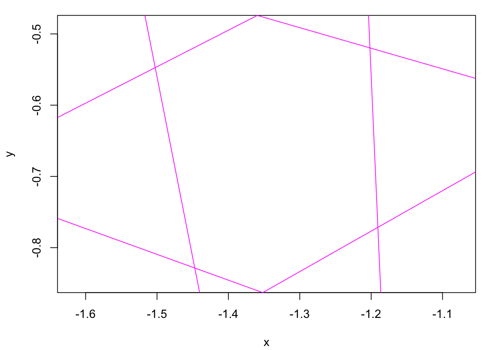 The polytope itself (with redundant sections of the half-plane boundaries removed) can be visualized via
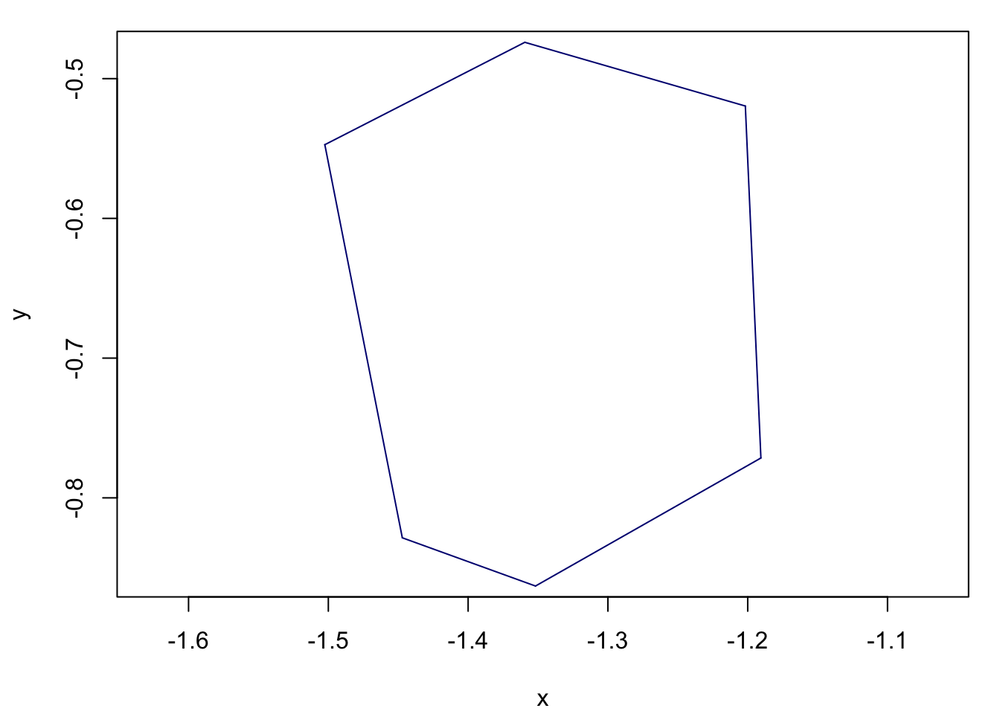
To visualize all (active) first or second-order Voronoi cells in a tessellation:
vis_vor1_polytopes(VOR = vor, add = F, vertex.cex = 0)
title("Vor 1")
vis_vor2_polytopes(VOR = vor, add = F, vertex.cex = 0)
title("Vor 2")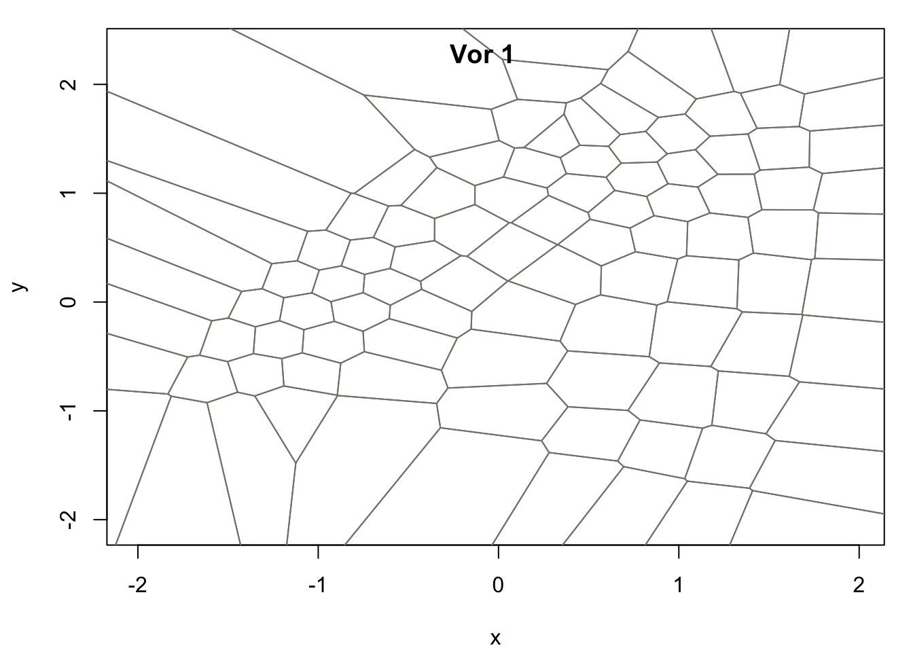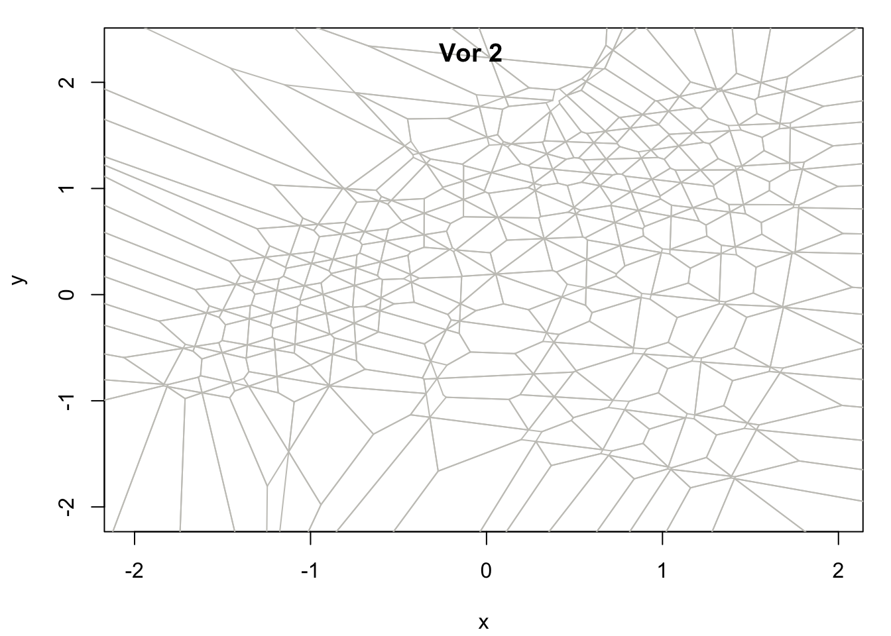
The vis_vor* visualizations are designed to allow layering, just like base R plots. Here, we plot both first (blue) and second-order (gray) Voronoi tessellations together:
vis_vor2_polytopes(VOR = vor, add = F, vertex.cex = 0)
vis_vor1_polytopes(VOR = vor, add = T, vertex.cex = 0, edge.col = tableau20("blue"))
title("Vor 1 and 2")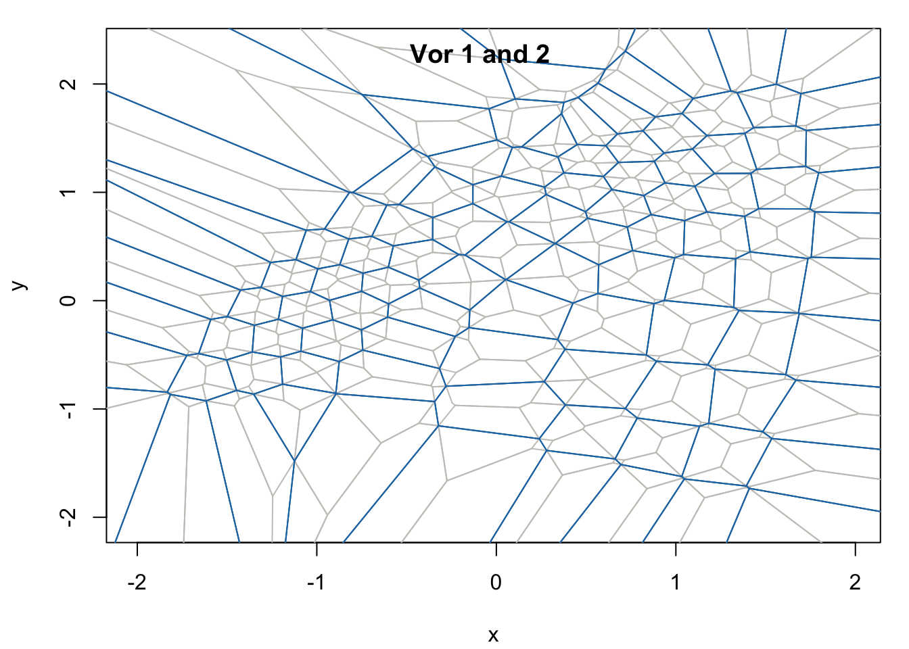
User-supplied text annotations can be placed at the centers of each Voronoi cell with the vis_vor_annotate functions. By default, the functions called without any text supplied will annotate each Voronoi cell with its id:
vis_vor1_polytopes(VOR = vor, add = F, vertex.cex = 0)
vis_vor1_annotate(VOR = vor, add = T, text.col = tableau20("blue"))
title("Vor 1")
# Vor 2
vis_vor2_polytopes(VOR = vor, add = F, vertex.cex = 0)
vis_vor2_annotate(VOR = vor, add = T, text.col = tableau20("green"))
title("Vor 2")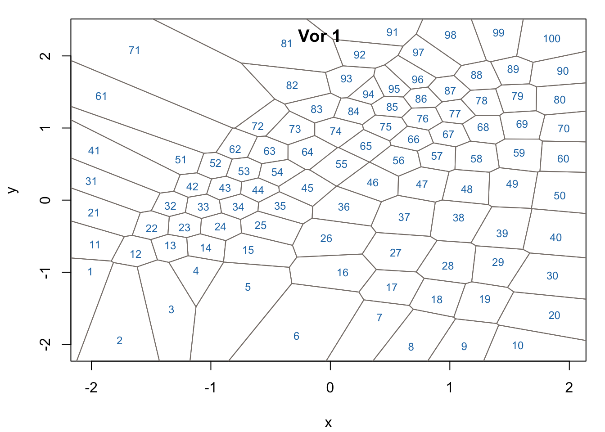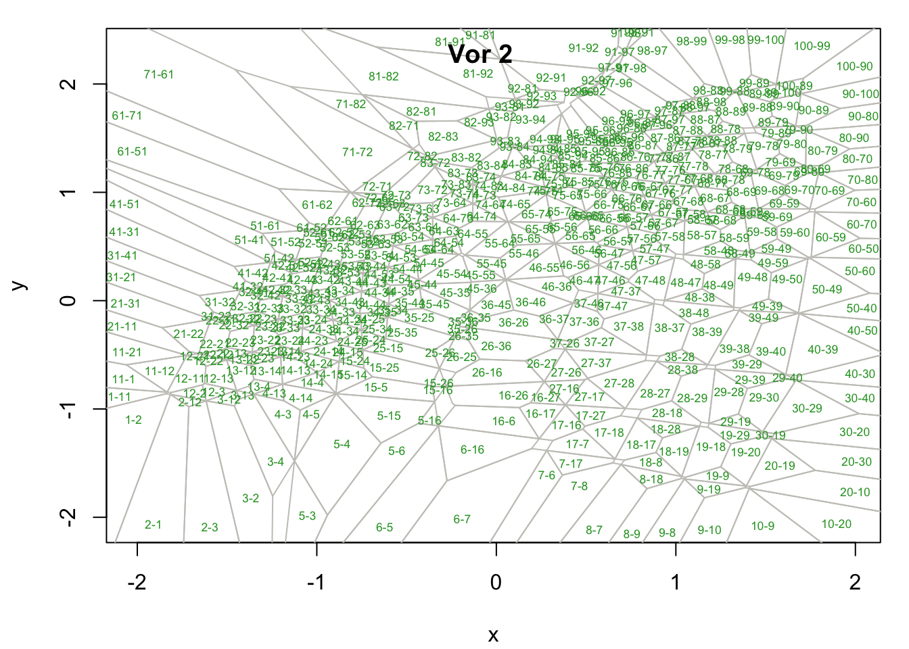
Approximating ellipsoids (if previously calculated and stored) can also be viewed in situ:
# Vor 1 Dikin
vis_vor1_polytopes(VOR = vor, add = F, vertex.cex = 0)
vis_vor1_Dikin(VOR = vor, add = T)
# Vor 2 Dikin
vis_vor2_polytopes(VOR = vor, add = F, vertex.cex = 0)
vis_vor2_Dikin(VOR = vor, add = T)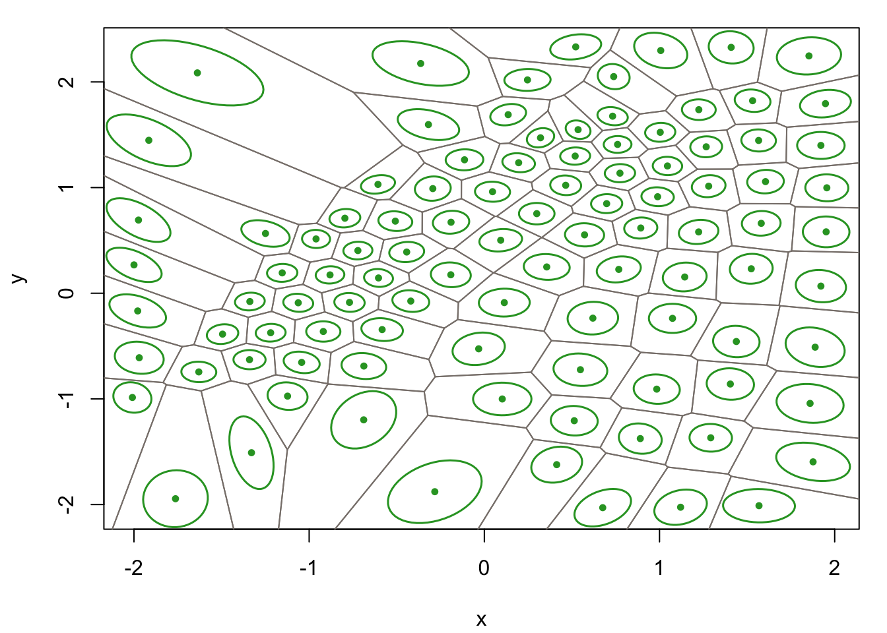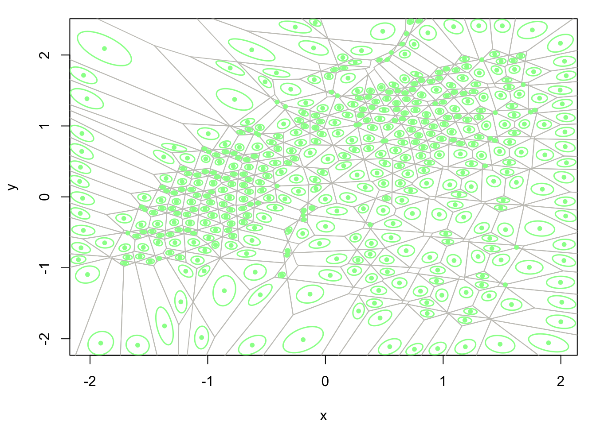
# Vor 1 MVIE
vis_vor1_polytopes(VOR = vor, add = F, vertex.cex = 0)
vis_vor1_MVIE(VOR = vor, add = T)
# Vor 2 MVIE
vis_vor2_polytopes(VOR = vor, add = F, vertex.cex = 0)
vis_vor2_MVIE(VOR = vor, add = T)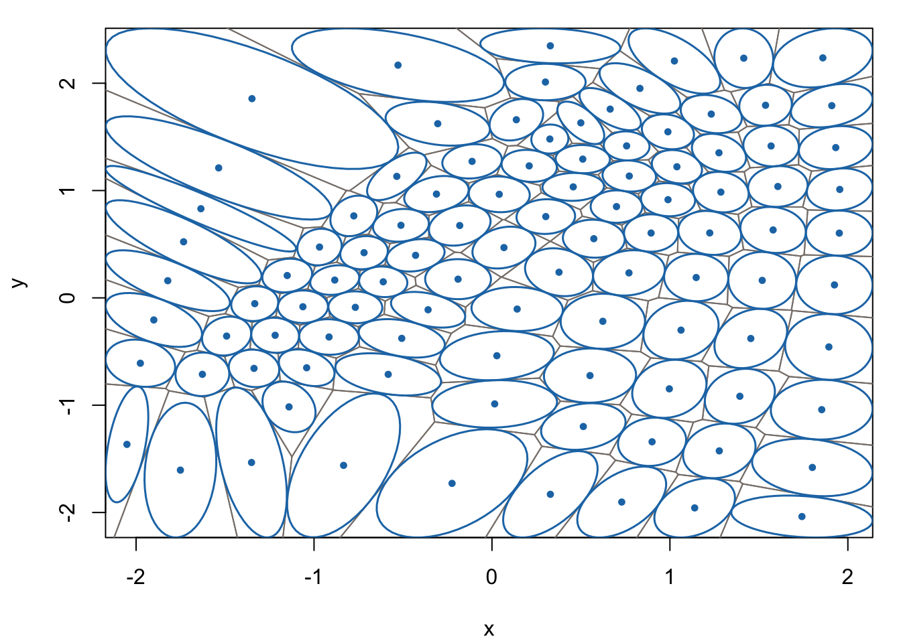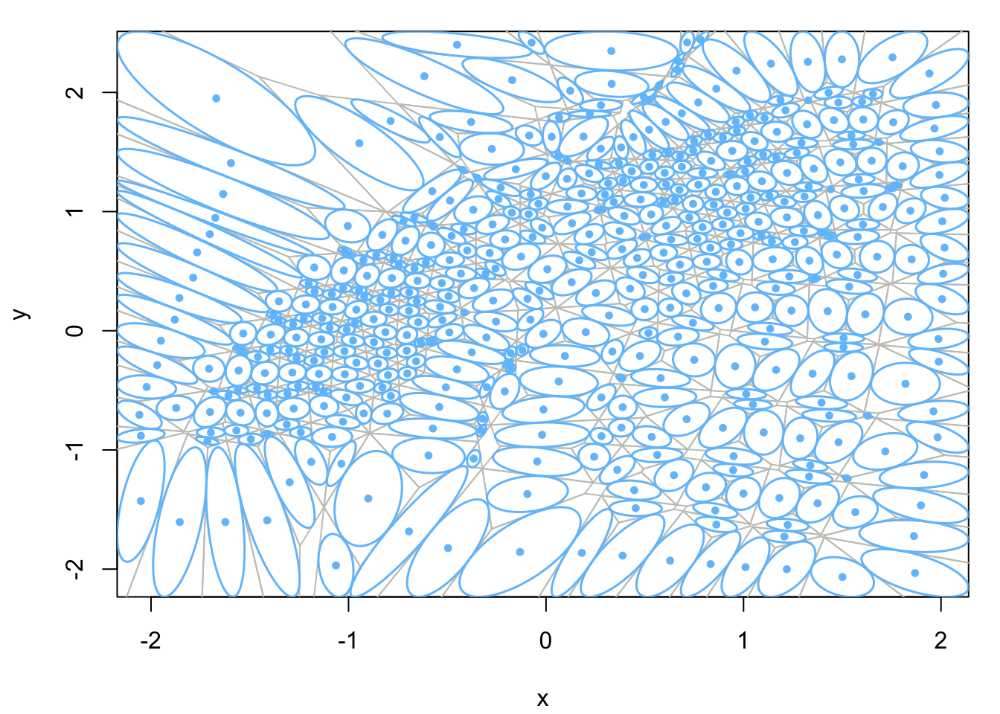
3.8 Saving & Loading
VOR objects can be saved to disk for future access via the save method. This method requires a user-specified file name and must have extension .vor.
While the file has extension .vor it is saved in R’s binary .rds format as a list. R’s readRDS command can be used to return this list to the user’s environment in a new R session, but the pointers to the C++ object are destroyed on exit of the first session. The load method will properly restore a previously saved VOR object to memory. Once loaded all object methods are available. For example, we can load the previously saved VOR object, re-compute its centers, and re-plot its first-order Dikin ellipsoids
vor2 = VorVQ::VOR$new()
vor2$load("cmix9.vor")
# Re-compute centers
vor2$calc_vor1_centers()
## Calculating Chebyshev centers for vor1 cells ...
## 15% 30% 45% 60% 75%
## 90% 100%
## Computation time: 9.09198e-05 minutes
# Check that it is the same
vis_vor1_polytopes(VOR = vor2, add = F, vertex.cex = 0)
vis_vor1_Dikin(VOR = vor2, add = T)3.9 Performing All Voronoi Calculations
If the results of all Voronoi calculations exposed by VorVQ are desired the wrapper method calc_all can be called just after VOR object initialition. Internally, this wrapper calls the following previously discussed methods, in the given order:
calc_DADJ()set_vor2_centers()calc_vor1_Dikin()calc_vor2_Dikin()calc_vor1_MVIE()calc_vor2_MVIE().
Note that calc_vor1_centers is excluded from the calc_all wrapper as it is not mandatory (the prototype vectors themselves are used as interior points for first-order Voronoi cells by default). As an example, we can re-initialize the VOR object and repeat all calculations above with one call to calc_all:
vor = VOR$new()
vor$initialize_VOR(CMIX9$W, CMIX9$CADJ)
## Initializing Voronoi object
## ++ storing W and dimensions ... done
## ++ setting global bounds = +/- 5% of W range ... done
## call $set_bounds to change
## ++ storing CADJ ... done
## ++ setting active vor1 indices (default to non-empty vor1 cells) ... done
## call $set_vor1_active to change
## ++ setting active vor2 indices (default to non-empty vor2 cells) ... done
## call $set_vor2_active to change
## Calculating Gabriel graph edges ...
## 15% 30% 45% 60% 75%
## 90% 100%
## Computation time: 1.3893e-05 minutes
vor$calc_all()
## Testing Delaunay graph edges ...
## Round 1 (456 edges) 25% 50% 75% 100%
## Round 2 (45 edges) 25% 50% 75% 100%
## Tested 501 of 4950 possible edges
## Computation time: 0.000461954 minutes
##
## Calculating Chebyshev centers for vor2 cells ...
## 9% 19% 29% 39% 49%
## 59% 69% 79% 89% 99%
## 100%
## Computation time: 0.000200537 minutes
##
## Calculating Dikin ellipsoids for vor1 cells ...
## 15% 30% 45% 60% 75%
## 90% 100%
## Computation time: 1.66746e-05 minutes
##
## Calculating Dikin ellipsoids for vor2 cells ...
## 9% 19% 29% 39% 49%
## 59% 69% 79% 89% 99%
## 100%
## Computation time: 1.83782e-05 minutes
##
## Calculating max vol incribed ellipsoids for vor1 cells ...
## 15% 30% 45% 60% 75%
## 90% 100%
## Computation time: 3.21834e-05 minutes
##
## Calculating max vol incribed ellipsoids for vor2 cells ...
## 9% 19% 29% 39% 49%
## 59% 69% 79% 89% 99%
## 100%
## Computation time: 8.23573e-05 minutes3.10 Higher-Dimensional Settings
When the data dimension \(d\) is high several of the Voronoi calculations exposed by VorVQ can be fairly time consuming, particularly the calculation of the Delaunay adjacency and MVIEs (mostly the second-order MVIEs, as there can be many thousand active second-order Voronoi cells in a higher-dimensional tessellation). To mitigate this it is recommended to allow parallel computation (which is allowed by default, see ?set_params). To give the user an idea of how long these calculations may take, below we calc_all quantities for the 100-dimensional synthethic SHGR tessellation provided by VorVQ as a higher-dimensional example case (see ?SHGR for more details):
# Initialize with SHGR
vor = VOR$new()
vor$initialize_VOR(SHGR$W, SHGR$CADJ)
## Initializing Voronoi object
## ++ storing W and dimensions ... done
## ++ setting global bounds = +/- 5% of W range ... done
## call $set_bounds to change
## ++ storing CADJ ... done
## ++ setting active vor1 indices (default to non-empty vor1 cells) ... done
## call $set_vor1_active to change
## ++ setting active vor2 indices (default to non-empty vor2 cells) ... done
## call $set_vor2_active to change
## Calculating Gabriel graph edges ...
## 10% 20% 30% 40% 50%
## 60% 70% 80% 90% 100%
## Computation time: 0.000888026 minutes
# View number of active 2nd-order Voronoi cells
nrow(vor$vor2_active)
## [1] 2875
# Calc all
vor$calc_all()
## Testing Delaunay graph edges ...
## Round 1 (9807 edges) 25% 50% 75% 100%
## Round 2 (13371 edges) 25% 50% 75% 100%
## Round 3 (23379 edges) 25% 50% 75% 100%
## Round 4 (7792 edges) 25% 50% 75% 100%
## Round 5 (6943 edges) 25% 50% 75% 100%
## Round 6 (174 edges) 25% 50% 75% 100%
## Tested 61466 of 79800 possible edges
## Computation time: 1.60014 minutes
##
## Calculating Chebyshev centers for vor2 cells ...
## 9% 19% 29% 39% 49%
## 59% 69% 79% 89% 99%
## 100%
## Computation time: 0.233498 minutes
##
## Calculating Dikin ellipsoids for vor1 cells ...
## 9% 19% 29% 38% 48%
## 58% 68% 77% 87% 97%
## 100%
## Computation time: 0.0019867 minutes
##
## Calculating Dikin ellipsoids for vor2 cells ...
## 9% 19% 29% 39% 49%
## 59% 69% 79% 89% 99%
## 100%
## Computation time: 0.0307555 minutes
##
## Calculating max vol incribed ellipsoids for vor1 cells ...
## 9% 19% 29% 38% 48%
## 58% 68% 77% 87% 97%
## 100%
## Computation time: 1.24407 minutes
##
## Calculating max vol incribed ellipsoids for vor2 cells ...
## 4% 9% 14% 19% 24%
## 29% 34% 39% 44% 49%
## 54% 59% 64% 69% 74%
## 79% 84% 89% 94% 99%
## 100%
## Computation time: 28.2546 minutesThe MVIE calculation for the 2,875 second-order Voronoi cells required approximately 30 minutes of parallel computation with 15 available threads on a 2.4 GHz 8-Core Intel Core i9 processor running Mac OS Catalina (10.15.6). If these processing times are prohibitive, the user may instead compute approximate MVIEs, which are optimized over only the ellipsoidal rotations (i.e., not jointly with the centers, which remain fixed at their starting values). This modification, controlled by setting the parameter MVIE_fix_c0 = T, see ?set_params) can result in significant computational savings (at the expense of volumetric precision), as shown below:
References
[12] J. E. Chacón, “Data-driven choice of the smoothing parametrization for kernel density estimators,” Canadian Journal of Statistics, vol. 37, no. 2, pp. 249–265, 2009.